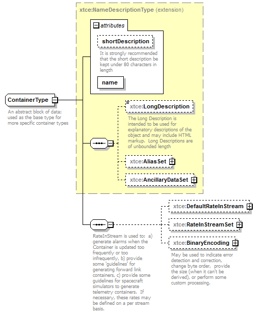
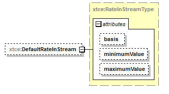
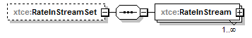
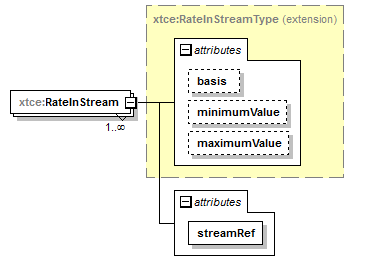
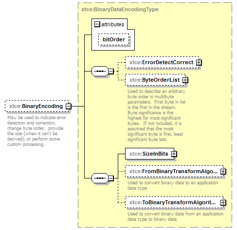

| diagram |  | ||||||||||||||||||||
| namespace | http://www.omg.org/space/xtce | ||||||||||||||||||||
| type | extension of xtce:NameDescriptionType | ||||||||||||||||||||
| properties |
|
||||||||||||||||||||
| children | xtce:LongDescription xtce:AliasSet xtce:AncillaryDataSet xtce:DefaultRateInStream xtce:RateInStreamSet xtce:BinaryEncoding | ||||||||||||||||||||
| used by |
|
||||||||||||||||||||
| attributes |
|
||||||||||||||||||||
| annotation |
|
||||||||||||||||||||
| source | <complexType name="ContainerType" abstract="true" mixed="false"> <annotation> <documentation xml:lang="en">An abstract block of data; used as the base type for more specific container types</documentation> </annotation> <complexContent> <extension base="xtce:NameDescriptionType"> <sequence> <annotation> <documentation xml:lang="en">RateInStream is used to: a) generate alarms when the Container is updated too frequently or too infrequently, b) provide some 'guidelines' for generating forward link containers, c) provide some guidelines for spacecraft simulators to generate telemetry containers. If necessary, these rates may be defined on a per stream basis.</documentation> <appinfo>The software should check that any Stream names referenced in the RateInStreamSet actually exist.</appinfo> </annotation> <element name="DefaultRateInStream" type="xtce:RateInStreamType" minOccurs="0"/> <element name="RateInStreamSet" minOccurs="0"> <complexType> <sequence> <element name="RateInStream" maxOccurs="unbounded"> <complexType> <complexContent> <extension base="xtce:RateInStreamType"> <attribute name="streamRef" type="xtce:NameReferenceType" use="required"/> </extension> </complexContent> </complexType> </element> </sequence> </complexType> </element> <element name="BinaryEncoding" type="xtce:BinaryDataEncodingType" minOccurs="0"> <annotation> <documentation xml:lang="en">May be used to indicate error detection and correction, change byte order, provide the size (when it can't be derived), or perform some custom processing.</documentation> </annotation> </element> </sequence> </extension> </complexContent> </complexType> |
| diagram |  | ||||||||||||||||||||||||
| namespace | http://www.omg.org/space/xtce | ||||||||||||||||||||||||
| type | xtce:RateInStreamType | ||||||||||||||||||||||||
| properties |
|
||||||||||||||||||||||||
| attributes |
|
||||||||||||||||||||||||
| source | <element name="DefaultRateInStream" type="xtce:RateInStreamType" minOccurs="0"/> |
| diagram |  | ||||||
| namespace | http://www.omg.org/space/xtce | ||||||
| properties |
|
||||||
| children | xtce:RateInStream | ||||||
| source | <element name="RateInStreamSet" minOccurs="0"> <complexType> <sequence> <element name="RateInStream" maxOccurs="unbounded"> <complexType> <complexContent> <extension base="xtce:RateInStreamType"> <attribute name="streamRef" type="xtce:NameReferenceType" use="required"/> </extension> </complexContent> </complexType> </element> </sequence> </complexType> </element> |
| diagram |  | ||||||||||||||||||||||||||||||
| namespace | http://www.omg.org/space/xtce | ||||||||||||||||||||||||||||||
| type | extension of xtce:RateInStreamType | ||||||||||||||||||||||||||||||
| properties |
|
||||||||||||||||||||||||||||||
| attributes |
|
||||||||||||||||||||||||||||||
| source | <element name="RateInStream" maxOccurs="unbounded"> <complexType> <complexContent> <extension base="xtce:RateInStreamType"> <attribute name="streamRef" type="xtce:NameReferenceType" use="required"/> </extension> </complexContent> </complexType> </element> |
| type | xtce:NameReferenceType | ||
| properties |
|
||
| source | <attribute name="streamRef" type="xtce:NameReferenceType" use="required"/> |
| diagram |  | ||||||||||||
| namespace | http://www.omg.org/space/xtce | ||||||||||||
| type | xtce:BinaryDataEncodingType | ||||||||||||
| properties |
|
||||||||||||
| children | xtce:ErrorDetectCorrect xtce:ByteOrderList xtce:SizeInBits xtce:FromBinaryTransformAlgorithm xtce:ToBinaryTransformAlgorithm | ||||||||||||
| attributes |
|
||||||||||||
| annotation |
|
||||||||||||
| source | <element name="BinaryEncoding" type="xtce:BinaryDataEncodingType" minOccurs="0"> <annotation> <documentation xml:lang="en">May be used to indicate error detection and correction, change byte order, provide the size (when it can't be derived), or perform some custom processing.</documentation> </annotation> </element> |